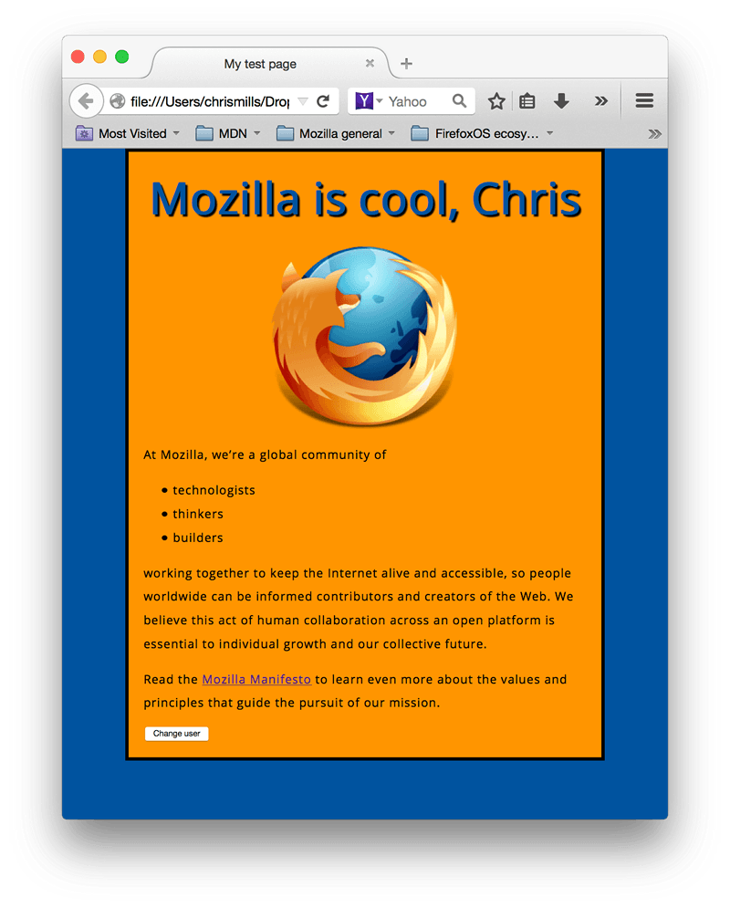

JavaScript is a programming language that adds interactivity to your website. This happens in games, in the behavior of responses when buttons are pressed or with data entry on forms; with dynamic styling; with animation, etc. This article helps you get started with JavaScript and furthers your understanding of what is possible.
{{Glossary("JavaScript")}} ("JS" for short) is a full-fledged {{Glossary("Dynamic programming language", "dynamic programming language")}} that can add interactivity to a website. It was invented by Brendan Eich (co-founder of the Mozilla project, the Mozilla Foundation, and the Mozilla Corporation).
JavaScript is versatile and beginner-friendly. With more experience, you'll be able to create games, animated 2D and 3D graphics, comprehensive database-driven apps, and much more!
JavaScript itself is relatively compact, yet very flexible. Developers have written a variety of tools on top of the core JavaScript language, unlocking a vast amount of functionality with minimum effort. These include:
It's outside the scope of this article—as a light introduction to JavaScript—to present the details of how the core JavaScript language is different from the tools listed above. You can learn more in MDN's JavaScript learning area, as well as in other parts of MDN.
The section below introduces some aspects of the core language and offers an opportunity to play with a few browser API features too. Have fun!
JavaScript is one of the most popular modern web technologies! As your JavaScript skills grow, your websites will enter a new dimension of power and creativity.
However, getting comfortable with JavaScript is more challenging than getting comfortable with HTML and CSS. You may have to start small, and progress gradually. To begin, let's examine how to add JavaScript to your page for creating a Hello world! example. (Hello world! is the standard for introductory programming examples.)
Important: If you haven't been following along with the rest of our course, download this example code and use it as a starting point.
scripts. Within the scripts folder, create a new file called main.js, and save it.index.html file, enter this code on a new line, just before the closing </body> tag:
<script src="scripts/main.js"></script>
main.js file:
const myHeading = document.querySelector('h1');
myHeading.textContent = 'Hello world!';
index.html in your browser. You should see something like this:Note: The reason the instructions (above) place the {{htmlelement("script")}} element near the bottom of the HTML file is that the browser reads code in the order it appears in the file.
If the JavaScript loads first and it is supposed to affect the HTML that hasn't loaded yet, there could be problems. Placing JavaScript near the bottom of an HTML page is one way to accommodate this dependency. To learn more about alternative approaches, see Script loading strategies.
The heading text changed to Hello world! using JavaScript. You did this by using a function called {{domxref("Document.querySelector", "querySelector()")}} to grab a reference to your heading, and then store it in a variable called myHeading. This is similar to what we did using CSS selectors. When you want to do something to an element, you need to select it first.
Following that, the code set the value of the myHeading variable's {{domxref("Node.textContent", "textContent")}} property (which represents the content of the heading) to Hello world!.
Note: Both of the features you used in this exercise are parts of the Document Object Model (DOM) API, which has the capability to manipulate documents.
To give you a better understanding of how JavaScript works, let's explain some of the core features of the language. It's worth noting that these features are common to all programming languages. If you master these fundamentals, you have a head start on coding in other languages too!
Important: In this article, try entering the example code lines into your JavaScript console to see what happens. For more details on JavaScript consoles, see Discover browser developer tools.
{{Glossary("Variable", "Variables")}} are containers that store values. You start by declaring a variable with the var (less recommended, dive deeper for the explanation) or the let keyword, followed by the name you give to the variable:
let myVariable;
Note: A semicolon at the end of a line indicates where a statement ends. It is only required when you need to separate statements on a single line. However, some people believe it's good practice to have semicolons at the end of each statement. There are other rules for when you should and shouldn't use semicolons. For more details, see Your Guide to Semicolons in JavaScript.
Note: You can name a variable nearly anything, but there are some restrictions. (See this section about naming rules.) If you are unsure, you can check your variable name to see if it's valid.
Note: JavaScript is case sensitive. This means myVariable is not the same as myvariable. If you have problems in your code, check the case!
Note: For more details about the difference between var and let, see The difference between var and let.
After declaring a variable, you can give it a value:
myVariable = 'Bob';
Also, you can do both these operations on the same line:
let myVariable = 'Bob';
You retrieve the value by calling the variable name:
myVariable;
After assigning a value to a variable, you can change it later in the code:
let myVariable = 'Bob'; myVariable = 'Steve';
Note that variables may hold values that have different data types:
| Variable | Explanation | Example |
|---|---|---|
| {{Glossary("String")}} | This is a sequence of text known as a string. To signify that the value is a string, enclose it in single quote marks. | let myVariable = 'Bob'; |
| {{Glossary("Number")}} | This is a number. Numbers don't have quotes around them. | let myVariable = 10; |
| {{Glossary("Boolean")}} | This is a True/False value. The words true and false are special keywords that don't need quote marks. |
let myVariable = true; |
| {{Glossary("Array")}} | This is a structure that allows you to store multiple values in a single reference. | let myVariable = [1,'Bob','Steve',10];Refer to each member of the array like this: myVariable[0], myVariable[1], etc. |
| {{Glossary("Object")}} | This can be anything. Everything in JavaScript is an object and can be stored in a variable. Keep this in mind as you learn. | let myVariable = document.querySelector('h1');All of the above examples too. |
So why do we need variables? Variables are necessary to do anything interesting in programming. If values couldn't change, then you couldn't do anything dynamic, like personalize a greeting message or change an image displayed in an image gallery.
Comments are snippets of text that can be added along with code. The browser ignores text marked as comments. You can write comments in JavaScript just as you can in CSS:
/* Everything in between is a comment. */
If your comment contains no line breaks, it's an option to put it behind two slashes like this:
// This is a comment
An {{Glossary("operator")}} is a mathematical symbol that produces a result based on two values (or variables). In the following table, you can see some of the simplest operators, along with some examples to try in the JavaScript console.
| Operator | Explanation | Symbol(s) | Example |
|---|---|---|---|
| Addition | Add two numbers together or combine two strings. | + |
6 + 9; |
| Subtraction, Multiplication, Division | These do what you'd expect them to do in basic math. | -, *, / |
9 - 3; |
| Assignment | As you've seen already: this assigns a value to a variable. | = |
let myVariable = 'Bob'; |
| Equality | This performs a test to see if two values are equal. It returns a true/false (Boolean) result. |
=== |
let myVariable = 3; |
| Not, Does-not-equal | This returns the logically opposite value of what it precedes. It turns a true into a false, etc.. When it is used alongside the Equality operator, the negation operator tests whether two values are not equal. |
!, !== |
For "Not", the basic expression is
"Does-not-equal" gives basically the same result with different syntax. Here we are testing "is
|
There are a lot more operators to explore, but this is enough for now. See Expressions and operators for a complete list.
Note: Mixing data types can lead to some strange results when performing calculations. Be careful that you are referring to your variables correctly, and getting the results you expect. For example, enter '35' + '25' into your console. Why don't you get the result you expected? Because the quote marks turn the numbers into strings, so you've ended up concatenating strings rather than adding numbers. If you enter 35 + 25 you'll get the total of the two numbers.
Conditionals are code structures used to test if an expression returns true or not. A very common form of conditionals is the if ... else statement. For example:
let iceCream = 'chocolate';
if(iceCream === 'chocolate') {
alert('Yay, I love chocolate ice cream!');
} else {
alert('Awwww, but chocolate is my favorite...');
}
The expression inside the if( ... ) is the test. This uses the identity operator (as described above) to compare the variable iceCream with the string chocolate to see if the two are equal. If this comparison returns true, the first block of code runs. If the comparison is not true, the second block of code—after the else statement—runs instead.
{{Glossary("Function", "Functions")}} are a way of packaging functionality that you wish to reuse. It's possible to define a body of code as a function that executes when you call the function name in your code. This is a good alternative to repeatedly writing the same code. You have already seen some uses of functions previously. For example:
let myVariable = document.querySelector('h1');
alert('hello!');
These functions, document.querySelector and alert, are built into the browser.
If you see something which looks like a variable name, but it's followed by parentheses— () —it is likely a function. Functions often take {{Glossary("Argument", "arguments")}}: bits of data they need to do their job. Arguments go inside the parentheses, separated by commas if there is more than one argument.
For example, the alert() function makes a pop-up box appear inside the browser window, but we need to give it a string as an argument to tell the function what message to display.
You can also define your own functions. In the next example, we create a simple function which takes two numbers as arguments and multiplies them:
function multiply(num1,num2) {
let result = num1 * num2;
return result;
}
Try running this in the console; then test with several arguments. For example:
multiply(4, 7); multiply(20, 20); multiply(0.5, 3);
Note: The return statement tells the browser to return the result variable out of the function so it is available to use. This is necessary because variables defined inside functions are only available inside those functions. This is called variable {{Glossary("Scope", "scoping")}}. (Read more about variable scoping.)
Real interactivity on a website requires event handlers. These are code structures that listen for activity in the browser, and run code in response. The most obvious example is handling the click event, which is fired by the browser when you click on something with your mouse. To demonstrate this, enter the following into your console, then click on the current webpage:
document.querySelector('html').onclick = function() {
alert('Ouch! Stop poking me!');
}
There are many ways to attach an event handler to an element. Here we select the {{htmlelement("html")}} element, setting its onclick handler property equal to an anonymous (i.e. nameless) function, which contains the code we want the click event to run.
Note that
document.querySelector('html').onclick = function() {};
is equivalent to
let myHTML = document.querySelector('html');
myHTML.onclick = function() {};
It's just shorter.
With this review of JavaScript basics completed (above), let's add some new features to our example site.
Before going any further, delete the current contents of your main.js file — the bit you added earlier during the "Hello world!" example — and save the empty file. If you don't, the existing code will clash with the new code you are about to add.
In this section, you will learn how to use JavaScript and DOM API features to alternate the display of one of two images. This change will happen as a user clicks the displayed image.
images folder.main.js file.
let myImage = document.querySelector('img');
myImage.onclick = function() {
let mySrc = myImage.getAttribute('src');
if(mySrc === 'images/firefox-icon.png') {
myImage.setAttribute('src','images/firefox2.png');
} else {
myImage.setAttribute('src','images/firefox-icon.png');
}
}
index.html in the browser. Now when you click the image, it should change to the other one.This is what happened. You stored a reference to your {{htmlelement("img")}} element in the myImage variable. Next, you made this variable's onclick event handler property equal to a function with no name (an "anonymous" function). So every time this element is clicked:
src attribute.src value is equal to the path of the original image:
src value to the path of the second image, forcing the other image to be loaded inside the {{htmlelement("img")}} element.src value swaps back to the original image path, to the original state.Next, let's change the page title to a personalized welcome message when the user first visits the site. This welcome message will persist. Should the user leave the site and return later, we will save the message using the Web Storage API. We will also include an option to change the user, and therefore, the welcome message.
index.html, add the following line just before the {{htmlelement("script")}} element:
<button>Change user</button>
main.js, place the following code at the bottom of the file, exactly as it is written. This takes references to the new button and the heading, storing each inside variables:
let myButton = document.querySelector('button');
let myHeading = document.querySelector('h1');
function setUserName() {
let myName = prompt('Please enter your name.');
localStorage.setItem('name', myName);
myHeading.textContent = 'Mozilla is cool, ' + myName;
}
The setUserName() function contains a prompt() function, which displays a dialog box, similar to alert(). This prompt() function does more than alert(), asking the user to enter data, and storing it in a variable after the user clicks OK. In this case, we are asking the user to enter a name. Next, the code calls on an API localStorage, which allows us to store data in the browser and retrieve it later. We use localStorage's setItem() function to create and store a data item called 'name', setting its value to the myName variable which contains the user's entry for the name. Finally, we set the textContent of the heading to a string, plus the user's newly stored name.if ... else block (below). We could call this initialization code, as it structures the app when it first loads.
if(!localStorage.getItem('name')) {
setUserName();
} else {
let storedName = localStorage.getItem('name');
myHeading.textContent = 'Mozilla is cool, ' + storedName;
}
This first line of this block uses the negation operator (logical NOT, represented by the !) to check whether the name data exists. If not, the setUserName() function runs to create it. If it exists (that is, the user set a user name during a previous visit), we retrieve the stored name using getItem() and set the textContent of the heading to a string, plus the user's name, as we did inside setUserName().onclick event handler (below) on the button. When clicked, setUserName() runs. This allows the user to enter a different name by pressing the button.
myButton.onclick = function() {
setUserName();
}
When you run the example and get the dialog box that prompts you to enter your user name, try pressing the Cancel button. You should end up with a title that reads Mozilla is cool, null. This happens because—when you cancel the prompt—the value is set as null. Null is a special value in JavaScript that refers to the absence of a value.
Also, try clicking OK without entering a name. You should end up with a title that reads Mozilla is cool, for fairly obvious reasons.
To avoid these problems, you could check that the user hasn't entered a blank name. Update your setUserName() function to this:
function setUserName() {
let myName = prompt('Please enter your name.');
if(!myName) {
setUserName();
} else {
localStorage.setItem('name', myName);
myHeading.textContent = 'Mozilla is cool, ' + myName;
}
}
In human language, this means: If myName has no value, run setUserName() again from the start. If it does have a value (if the above statement is not true), then store the value in localStorage and set it as the heading's text.
If you have followed all the instructions in this article, you should end up with a page that looks something like the image below. You can also view our version.

If you get stuck, you can compare your work with our finished example code on GitHub.
We have just scratched the surface of JavaScript. If you enjoyed playing, and wish to go further, take advantage of the resources listed below.
{{PreviousMenuNext("Learn/Getting_started_with_the_web/CSS_basics", "Learn/Getting_started_with_the_web/Publishing_your_website", "Learn/Getting_started_with_the_web")}}